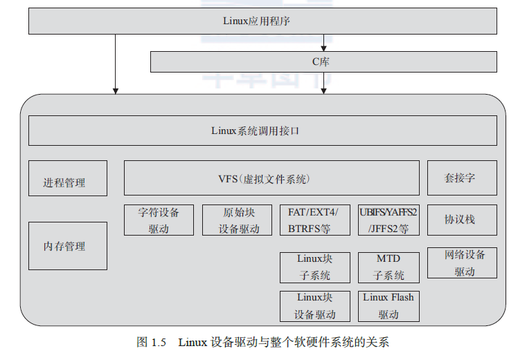

概述

用户空间与内核空间的交互
- 应用程序可以直接使用Linux 的系统调用，也可使用C 库函数。一般都是用后者。
C标准库与POSIX库
- C标准库和POSIX库都是在不同层次上提供了对操作系统功能的封装，但它们的目标和功能有所不同。
- 在层次结构上，可以说POSIX库在某种程度上是C标准库的扩展，增加了对系统级别的支持。因此，可以认为POSIX库更高级，因为它提供了更多的功能，但也更加特定于操作系统。
Linux 设备驱动的重点、难点
- 编写 Linux 设备驱动要求工程师有非常好的硬件基础，**懂得 SRAM、Flash、SDRAM、
磁盘的读写方式，UART、I2C、USB 等设备的接口以及轮询、中断、DMA 的原理，
PCI 总线的工作方式以及CPU 的内存管理单元（MMU）**等。 - 编写 Linux 设备驱动要求工程师有非常好的 C 语言基础，能灵活地运用 C 语言的结
构体、指针、函数指针及内存动态申请和释放等。 - 编写 Linux 设备驱动要求工程师有一定的 Linux 内核基础，虽然并不要求工程师对
内核各个部分有深入的研究，但**至少要明白驱动与内核的接口。尤其是对于块设
备、网络设备、Flash 设备、串口设备等复杂设备，**内核定义的驱动体系结构本身就
非常复杂。 - 编写 Linux 设备驱动要求工程师有非常好的多任务并发控制和同步的基础，因为在驱
动中会大量使用自旋锁、互斥、信号量、等待队列等并发与同步机制。